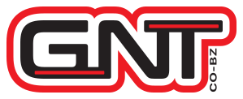

Tornitura meccanica conto terzi
GNT Officine Meccaniche esegue nella sede di Rovello Porro la tornitura CNC e tradizionale di particolari a disegno, anche lunghi, su torni con lunetta.
Tornitura meccanicaGNT Officine Meccaniche è un fornitore B2B di meccanica industriale che esegue lavorazioni meccaniche conto terzi e interventi su apparecchiature e impianti industriali. Nella sede di Rovello Porro (CO) l'officina realizza componenti a disegno mediante tornitura, fresatura CNC e carpenteria. Con squadre operative dalle sedi di Rovello Porro e Bolzano (BZ) l'azienda svolge montaggi, smontaggi, installazioni e manutenzioni meccaniche presso gli stabilimenti dei clienti.
Rapidità con attenzione al dettaglio

 Cantiere
Cantiere
Nella sede di Rovello Porro, GNT Officine Meccaniche esegue lavorazioni e costruzioni meccaniche per componenti a disegno, pezzi singoli e piccoli lotti, impiegando torni, fresatrici e attrezzature per carpenteria metallica.
Nell'officina di GNT Officine Meccaniche saldatura, taglio al plasma e ossitaglio completano le lavorazioni e servono anche alla costruzione di componenti.
GNT Officine Meccaniche esegue nella sede di Rovello Porro la tornitura CNC e tradizionale di particolari a disegno, anche lunghi, su torni con lunetta.
Tornitura meccanica
GNT Officine Meccaniche esegue nella sede di Rovello Porro lavorazioni di fresatura su centri di lavoro CNC, anche per particolari di grandi dimensioni.
Fresatura CNC
GNT Officine Meccaniche costruisce nella sede di Rovello Porro carpenterie e manufatti metallici, con taglio al plasma, ossitaglio e saldatura.
Carpenteria metallica industrialeGNT Officine Meccaniche esegue lavori di montaggio, smontaggio, installazione e manutenzione meccanica di apparecchiature e impianti industriali direttamente presso gli stabilimenti dei clienti.
Le squadre operative di GNT Officine Meccaniche che eseguono montaggi e manutenzioni in cantiere partono dalle sedi di Rovello Porro (CO) e Bolzano (BZ).
Presso lo stabilimentoGNT Officine Meccaniche esegue il montaggio e lo smontaggio meccanico di apparecchiature e impianti presso lo stabilimento del cliente, compresa la loro installazione.
Montaggio e smontaggio di impianti industrialiGNT Officine Meccaniche esegue interventi di manutenzione meccanica su apparecchiature e impianti produttivi, presso gli stabilimenti dei clienti.
Manutenzione meccanica industrialePer GNT Officine Meccaniche componenti, apparecchiature e impianti sono parti della stessa catena. Quando una commessa richiede sia lavorazioni meccaniche sia attività di montaggio, le competenze di officina e di cantiere dell'azienda si completano a vicenda.
Officina
Nella sede di Rovello Porro, GNT Officine Meccaniche si occupa di lavorazione, costruzione e revisione di componenti meccanici.
Lavorazioni meccaniche conto terziCantiere
GNT Officine Meccaniche si occupa di montaggio, installazione e manutenzione meccanica presso lo stabilimento del cliente.
Montaggi e manutenzioni industrialiGNT Officine Meccaniche presenta alcune macchine dell'officina nella sede di Rovello Porro, ciascuna con il dato che conta di più per chi deve far lavorare un pezzo.

Fresa Mecof
Corsa X 3.800 × Y 990 × Z 1.600 mm
Tornio parallelo
Asse Z 5.000 mm con lunetta
Tornio CNC Doosan Puma 3100 ULM
Asse Z 3.000 mm con lunetta
Banco taglio plasma
120 A, spessori dichiarati 1–20 mm, tavola 1.500 × 3.000 mmI valori indicati sono caratteristiche dichiarate dei macchinari di GNT Officine Meccaniche, non le dimensioni massime di qualsiasi componente realizzabile. Per un particolare specifico conviene inviare il disegno all'officina.
GNT Officine Meccaniche lavora solo per aziende: uffici tecnici, manutenzione e acquisti che cercano un fornitore per componenti a disegno o per interventi sui propri impianti. Fra le referenze dell'officina ci sono aziende attive nei settori seguenti.

Il marchio GNT Officine Meccaniche è utilizzato da due società distinte: GNT S.R.L., con sede a Rovello Porro, e GNT BOLZANO S.R.L., con sede a Bolzano.
La sede di Rovello Porro è l'officina produttiva di GNT Officine Meccaniche, con macchinari documentati, e la base operativa per i servizi in cantiere.
La sede di Bolzano è il presidio operativo di GNT Officine Meccaniche per i cantieri dell'Alto Adige e del Trentino.
Per una prima valutazione di una lavorazione meccanica o di un intervento industriale, a GNT Officine Meccaniche bastano poche informazioni. Ecco cosa è utile indicare, secondo il tipo di richiesta.
Lavorazione meccanica in officina
Montaggio, smontaggio o manutenzione
GNT Officine Meccaniche propone queste indicazioni per facilitare la richiesta, non come requisiti obbligatori: se qualcosa manca, l'officina aiuta a completarla.